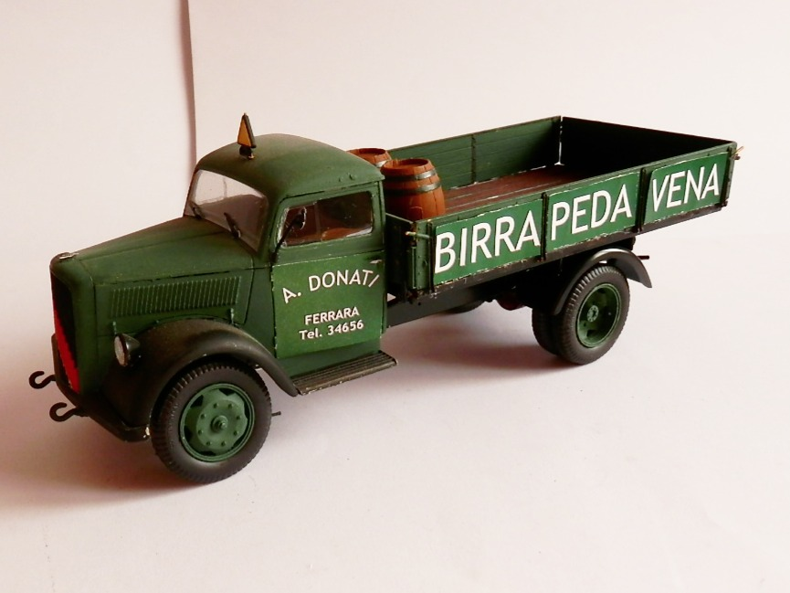
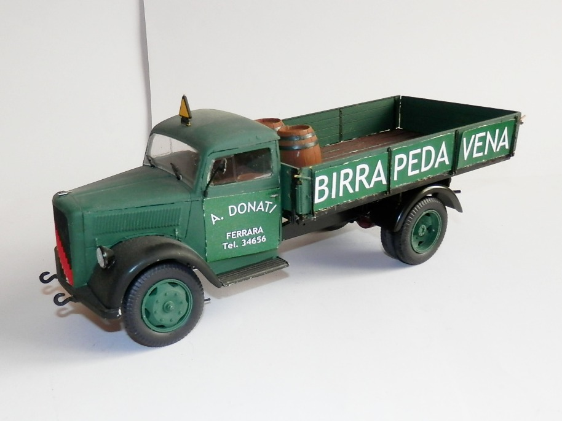
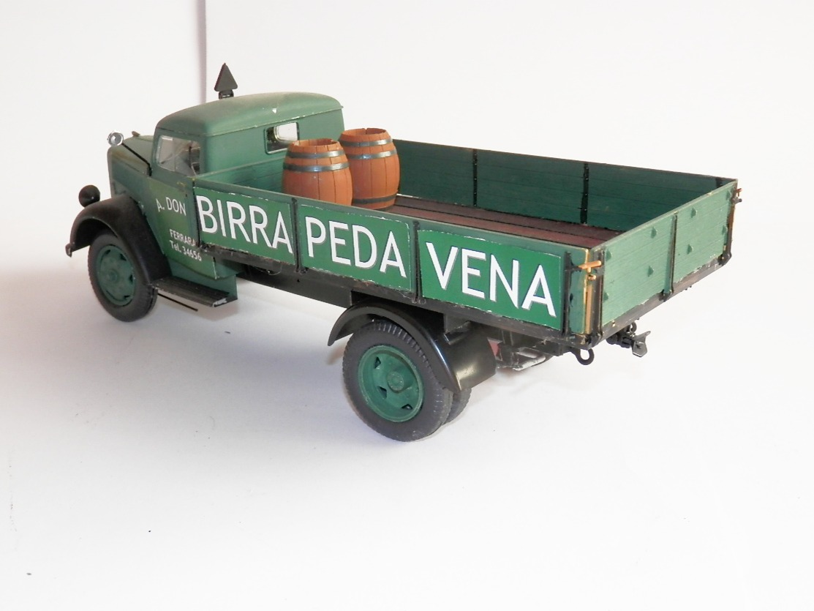
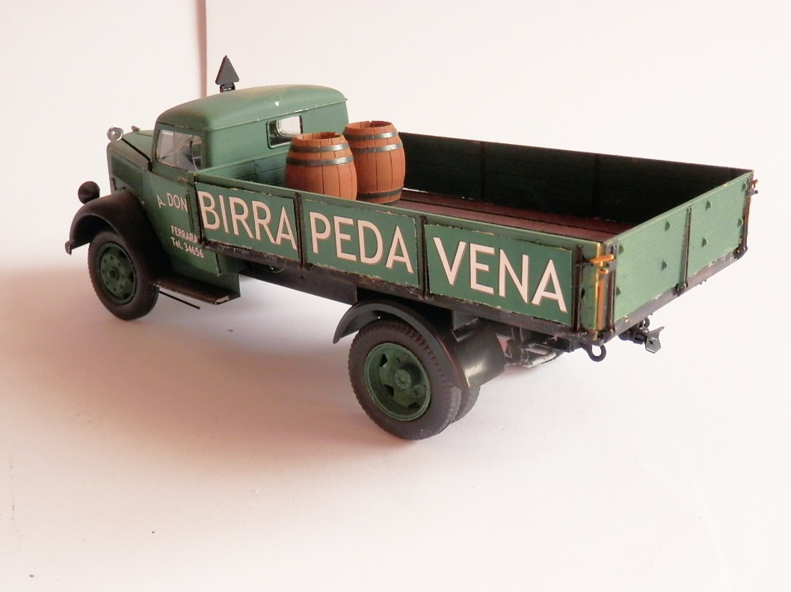
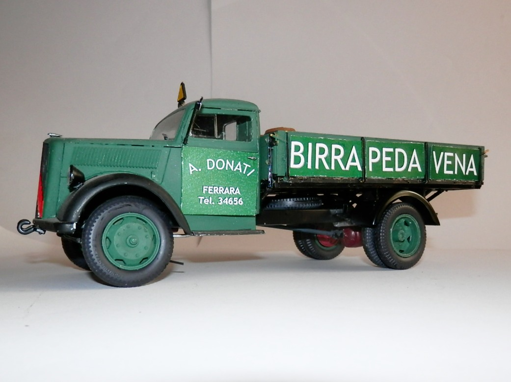
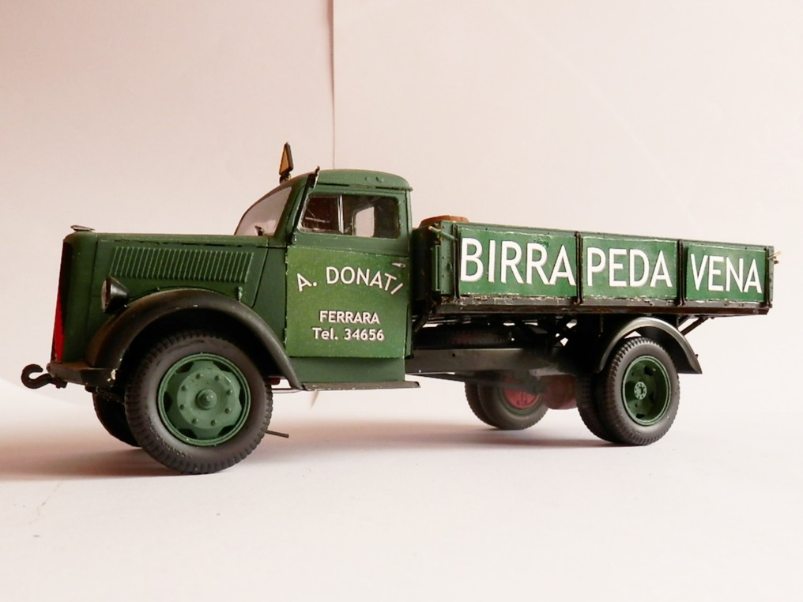

Auto e veicoli stradali · scale model archive
Opel Blitz
Opel Blitz — Kit: Revell, Scale: 1/35. While this kit reflects the style and branding of Donati company lorries from the 1950s and ’60s, it's not…

Photo gallery





English description
While this kit reflects the style and branding of Donati company lorries from the 1950s and ’60s, it's not historically accurate in terms of vehicle type. The Opel Blitz, featured in the model, was never part of the Donati fleet. Instead, the company—one of the leading beverage distributors in Ferrara at the time—relied on a small but robust lineup of vehicles, including two Fiat 615s (one petrol, one diesel), a Lancia Beta, and a pair of three-wheeled motocarri.
Founded by Agostino Donati and later run as a family business with his sons Nello and Franco, the company played a key role in supplying beer and soft drinks to the bars and osterie to Ferrara and across its countryside. The livery shown on the model, however, does capture the essence of the company’s branding during its peak years—a familiar sight on dusty provincial roads and a small tribute to a hands-on, family-run operation that helped keep the region refreshed for decades.
Descrizione italiana
Sebbene questo kit rifletta lo stile e l’immagine dei camion della ditta Donati degli anni Cinquanta e Sessanta, non è storicamente corretto per quanto riguarda il tipo di veicolo. L’Opel Blitz rappresentato nel modello non fece mai parte della flotta Donati. L’azienda, una delle principali distributrici di bevande a Ferrara in quel periodo, utilizzava invece una piccola ma solida serie di mezzi, tra cui due Fiat 615, uno a benzina e uno diesel, una Lancia Beta e un paio di motocarri a tre ruote.
Fondata da Agostino Donati e in seguito gestita come impresa familiare con i figli Nello e Franco, la ditta ebbe un ruolo importante nel rifornire di birra e bibite i bar e le osterie di Ferrara e della sua campagna. La livrea mostrata sul modello, tuttavia, coglie bene l’essenza dell’immagine aziendale negli anni migliori: una presenza familiare sulle polverose strade provinciali e un piccolo omaggio a un’attività familiare concreta e operosa, che per decenni contribuì a dissetare la regione.